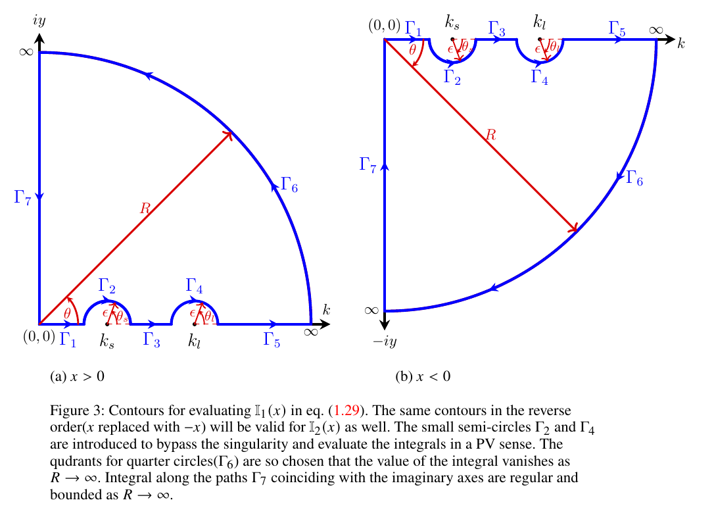

Proof: Steady-state solution for finite capillarity ($\alpha > 0$, with Rayleigh dissipation)
Evaluation of time-independent term $\eta_{s}(x)$
The time-independent part of eqn. $3.8$ in the manuscript is given by:
\[ \dfrac{\eta_s(x)}{F_0} = -\frac{1}{2\pi} \int_{-\infty}^{\infty}dk\; \left\{\dfrac{ \exp(ikx) }{\alpha |k|^2-(1+\rho_r)|k| + (1-\rho_r)}\right\}, \tag{3.4.1}\]
We get rid of the $|k|$ terms by folding the above integral onto the positive $k$-axis. This results in the following simplification of equation (3.4.1)
\[\frac{\eta_s(x)}{F_0} = -\frac{1}{\pi}\int_0^\infty dk\, \frac{\cos(kx)}{\alpha k^2-(1+\rho_r)k+(1-\rho_r)}. \tag{3.4.2}\]
The integrand on the right-hand side of equation (3.4.2), corresponding to the steady-state contribution, possesses two simple poles at $k=k_l$ and $k=k_s$. These correspond to the roots of
\[\alpha k^2-(1+\rho_r)k+(1-\rho_r)=0. \tag{3.4.3}\]
It follows that
\[k_{l,s} = \frac{1+\rho_r}{2\alpha}\left[1\pm\sqrt{1-\frac{4\alpha\beta}{1+\rho_r}}\right], \tag{3.4.4}\]
where
\[\alpha = \frac{gT}{\rho_l U^4}, \qquad \rho_r = \frac{\rho_u}{\rho_l}\qquad \beta=\frac{1-\rho_r}{1+\rho_r} . \tag{3.4.5}\]
The roots $k_l$ and $k_s$ are both positive and real and lie along the line of integration for
\[\alpha \leq \alpha_{\max} = \frac{1}{4}\frac{(1+\rho_r)^2}{1-\rho_r}. \tag{3.4.6}\]
Consequently, the integral in equation (3.4.2) is singular and requires a principal-value (PV) treatment. For $\alpha>\alpha_{\max}$, the roots become complex and lie outside the line of integration. The integral is then nonsingular and can be evaluated using standard contour-integration methods. However, in this regime there is no sustained far-field wave pattern, and it is therefore not of present interest. In what follows, we restrict attention to $\alpha<\alpha_{\max}$.
Considering these aspects, equations (3.4.2) may be rewritten as follows.
<!–For $\alpha>0$, the time-independent term $\eta_s(x)$ is given by:–>
\[\dfrac{\eta_{s}(x)}{F_0} = -\frac{1}{2 \pi} \left[\mathbb{I}_1(x) + \mathbb{I}_2(x)\right], \tag{3.4.7}\]
where,
\[\mathbb{I}_1(x) = \int_{0}^{\infty}dk\;\dfrac{\exp\left(ikx\right)}{\alpha(k-k_l)(k-k_s)}, \tag{3.4.8}\]
\[\mathbb{I}_2(x) = \int_{0}^{\infty}dk\;\dfrac{\exp\left(-ikx\right)}{\alpha(k-k_l)(k-k_s)}. \tag{3.4.9}\]

The integrals $\mathbb{I}_1(x)$ and $\mathbb{I}_2(x)$ are singular at $k=k_l$ and $k=k_s$, lying along the line of integration as shown in Figure 3. The integrals are interpreted in a PV sense and evaluated using the contour integration method using the contours shown in Figure 3.
Consider the integral $\mathbb{I}_1^c(x)$ along the closed contour shown in Figure 3(a) for $x>0$,
\[\mathbb{I}_1^c(x) = \frac{1}{\alpha}\oint dz \, \frac{\exp\left(izx\right)}{(z - k_l)(z - k_s)}, \qquad x>0. \tag{3.4.10}\]
Integral $\mathbb{I}_1^c(x)$ will be zero as the closed contour does not enclose any singularity. Further, upon breaking this integral along the individual segments of the contour, one may write as,
\[\begin{aligned} \mathbb{I}_1^c(x)=0 ={}& \frac{1}{\alpha}\int_{\Gamma_1} \frac{e^{izx}}{(z-k_l)(z-k_s)}\,dz + \frac{1}{\alpha}\int_{\Gamma_2} \frac{e^{izx}}{(z-k_l)(z-k_s)}\,dz \\ &+ \frac{1}{\alpha}\int_{\Gamma_3} \frac{e^{izx}}{(z-k_l)(z-k_s)}\,dz + \frac{1}{\alpha}\int_{\Gamma_4} \frac{e^{izx}}{(z-k_l)(z-k_s)}\,dz \\ &+ \frac{1}{\alpha}\int_{\Gamma_5} \frac{e^{izx}}{(z-k_l)(z-k_s)}\,dz + \frac{1}{\alpha}\int_{\Gamma_6} \frac{e^{izx}}{(z-k_l)(z-k_s)}\,dz \\ &+ \frac{1}{\alpha}\int_{\Gamma_7} \frac{e^{izx}}{(z-k_l)(z-k_s)}\,dz . \end{aligned} \tag{3.4.11}\]
The integral on the large quarter circle $\Gamma_6$ tends to zero as $R \to \infty$ for $x>0$, as argued below,
\[\begin{aligned} \lim_{R\to\infty} \left[ \frac{1}{\alpha} \int_{\Gamma_6} \frac{e^{izx}}{(z-k_l)(z-k_s)}\,dz \right] ={}& \lim_{R\to\infty} \Bigg[ \frac{1}{\alpha} \int_0^{\pi/2} iR e^{i\theta} \\ &\qquad\times \frac{ e^{ixR\cos\theta}\, e^{-xR\sin\theta} }{ \left(Re^{i\theta}-k_l\right) \left(Re^{i\theta}-k_s\right) } \,d\theta \Bigg], \end{aligned} \tag{3.4.12}\]
the value of the integrand above is governed by the factor $\exp(-xR\sin\theta)$ which tends to zero as $R \to \infty$ for $x>0$ by Jordan's lemma, since $\sin(\theta)$ is always positive in the first quadrant. In view of this, eqn. (3.4.11) reduces to,
\[\begin{aligned} 0={}& \frac{1}{\alpha} \lim_{\substack{\epsilon\to0\\R\to\infty}} \Bigg[ \int_0^{k_s-\epsilon} \frac{e^{ikx}}{(k-k_l)(k-k_s)}\,dk \\ &\qquad+ \int_{k_s+\epsilon}^{k_l-\epsilon} \frac{e^{ikx}}{(k-k_l)(k-k_s)}\,dk + \int_{k_l+\epsilon}^{R} \frac{e^{ikx}}{(k-k_l)(k-k_s)}\,dk \Bigg] \\[0.5em] &+ \frac{1}{\alpha} \lim_{\epsilon\to0} \int_{\pi}^{0} \frac{ e^{i[k_s+\epsilon e^{i\theta_s}]x} \,i\epsilon e^{i\theta_s} }{ (k_s+\epsilon e^{i\theta_s}-k_l) (k_s+\epsilon e^{i\theta_s}-k_s) } \,d\theta_s \\[0.5em] &+ \frac{1}{\alpha} \lim_{\epsilon\to0} \int_{\pi}^{0} \frac{ e^{i[k_l+\epsilon e^{i\theta_l}]x} \,i\epsilon e^{i\theta_l} }{ (k_l+\epsilon e^{i\theta_l}-k_l) (k_l+\epsilon e^{i\theta_l}-k_s) } \,d\theta_l \\[0.5em] &+ \frac{1}{\alpha} \int_{\infty}^{0} e^{i\pi/2} \frac{ e^{i[e^{i\pi/2}y]x} }{ (e^{i\pi/2}y-k_l) (e^{i\pi/2}y-k_s) } \,dy . \end{aligned} \tag{3.4.13}\]
Upon completing the limiting process and identifying the first three terms with the PV of $\mathbb{I}_1(x)$ and evaluating the remaining terms, one obtains,
\[\operatorname{PV}\!\left[\mathbb{I}_1(x)\right] = \frac{1}{\alpha(k_l-k_s)}\left[-i\pi e^{ik_sx}+i\pi e^{ik_lx}\right] + \frac{i}{\alpha}\int_0^\infty \frac{e^{-yx}}{(iy-k_l)(iy-k_s)}\,dy, \qquad x>0 . \tag{3.4.14}\]
Similarly for $x<0$ one performs similar steps of contour integration using the contour in Figure 3(b) and obtains,
\[\operatorname{PV}\!\left[\mathbb{I}_1(x)\right] = \frac{1}{\alpha(k_l-k_s)}\left[i\pi e^{ik_sx}-i\pi e^{ik_lx}\right] - \frac{i}{\alpha}\int_0^\infty \frac{e^{yx}}{(iy+k_l)(iy+k_s)}\,dy, \qquad x<0 . \tag{3.4.15}\]
The integral $\mathbb{I}_2(x)$ in eqn. (3.4.9) is the same as $\mathbb{I}_1(x)$ with $x$ replaced with $-x$, accordingly one may write
\[\operatorname{PV}\!\left[\mathbb{I}_2(x)\right] = \frac{1}{\alpha(k_l-k_s)}\left[i\pi e^{-ik_sx}-i\pi e^{-ik_lx}\right] - \frac{i}{\alpha}\int_0^\infty \frac{e^{-yx}}{(iy+k_l)(iy+k_s)}\,dy, \qquad x>0 . \tag{3.4.16}\]
and
\[\operatorname{PV}\!\left[\mathbb{I}_2(x)\right] = \frac{1}{\alpha(k_l-k_s)}\left[-i\pi e^{-ik_sx}+i\pi e^{-ik_lx}\right] + \frac{i}{\alpha}\int_0^\infty \frac{e^{yx}}{(iy-k_l)(iy-k_s)}\,dy, \qquad x<0 . \tag{3.4.17}\]
Upon plugging eqns. (3.4.14) and (3.4.16) (for $x>0$) and eqns. (3.4.15) and (3.4.17) (for $x<0$) into eqn. (3.4.7) and separating the real and imaginary parts (which becomes zero), one obtains symmetric expressions for $x>0$ and $x<0$. Since this is expected — the integral expression for $\eta_{s}(x)$ contains a symmetrical term namely $\cos(kx)$ — taking this symmetry into account one may write down the final expression as,
\[\frac{\eta_s(x)}{F_0} = \frac{1}{\alpha(k_l-k_s)}\left\{-\sin(k_s|x|)+\sin(k_l|x|)\right\} + \frac{k_l+k_s}{\pi\alpha}\int_0^\infty dy\, \frac{y\exp(-|x|y)}{\left(y^2+k_l^2\right)\left(y^2+k_s^2\right)}, \qquad -\infty<x<\infty . \tag{3.4.18}\]
It may be noted while the first two terms shows a far-field steady wavy pattern both upstream and downstream, the third term is a localised contribution which decays to zero rapidly as $|x| \to \infty$ and possesses a finite value at $x=0$: $\left(\frac{k_l+k_s}{2 \pi \alpha (k_l-k_s)}\right) \log \left(\frac{k_l}{k_s}\right)$. It may be remarked that eqn. (3.4.18) is a symmetrical solution implying the existence of both the gravity and capillary waves, symmetrically both in the upstream and downstream directions. Since it contradicts the observation that in steady state, gravity wave exists only in the downstream direction and capillary wave exists in the upstream direction, one suspects that this asymmetry will be introduced from the time-dependent part of the solution. Accordingly we perform analysis of the long time asymptotics of $\eta_{tr}(x,t)$.